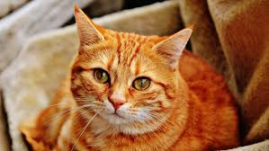
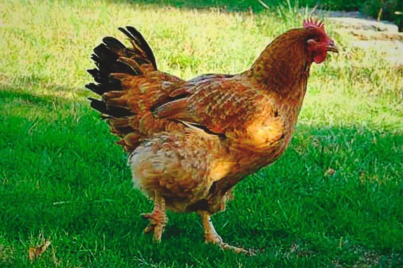
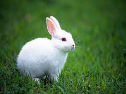
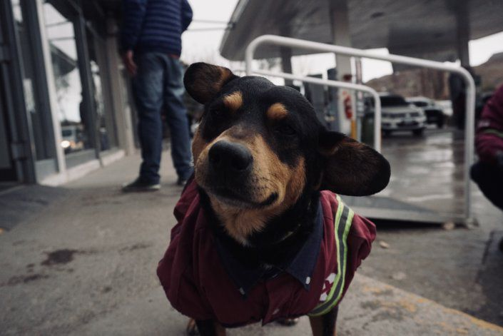

Conocenos!

Peperoni
Le gusta jugar y estar con otros gatos.
Lolo
Le gusta pasear y los niños.

Turu
La encontraron en la calle y busca una familia con patio.

Bugs
Su familia se muda y necesita un hogar donde sepan de conejos.

Peter
Le gusta hecharse largas siestas y busca un hogar tranquilo